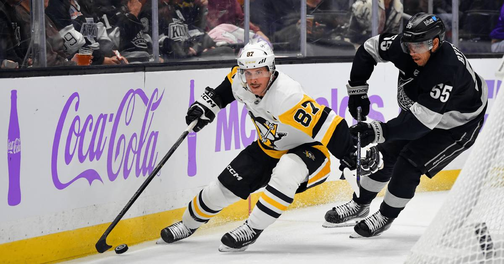

Sidney Crosby passes Marcel Dionne for sixth all-time in NHL scoring
Sidney Crosby scored twice in Pittsburgh's 5-2 win over Los Angeles, and his 1,772nd career point moved him past Marcel Dionne into sole possession of sixth place on the NHL's all-time scoring list. Ron Francis, in fifth, is 25 points away.

Disclosure: this post contains affiliate links. I earn a commission on qualifying purchases.
What happened
The Pittsburgh Penguins beat the Los Angeles Kings 5-2 on Saturday night at Crypto.com Arena, snapping a four-game losing streak. The win was nice. The history was the story.
Sidney Crosby scored twice, and the first of those goals was his 1,772nd career point — moving him past Marcel Dionne (1,771) into sole possession of sixth place on the NHL's all-time scoring list. The milestone goal came at 17:13 of the second period, a Evgeni Malkin one-timer that deflected off Crosby and in. The empty-netter later in the game made it 1,773 points: 660 goals and 1,113 assists in 1,437 games.
Crosby tied Dionne at 1,771 in Montreal on October 31. It took him a week to pass him. He is 39 years old, and he is still doing this.
The list ahead of him
Crosby now sits sixth, behind only Wayne Gretzky, Jaromir Jagr, Mark Messier, Gordie Howe, and Ron Francis. The next name on the list is Francis, at 1,798 points — Crosby is 25 points shy of tying him, 26 from passing him. That is a chase that could realistically happen this season if Crosby stays healthy and keeps producing at his current rate: six goals and six assists for 12 points in 17 games so far.
The names around him tell you what kind of company this is. Dionne held sixth place for decades. Crosby just took it from him, and the only players left ahead of him are the ones whose names are on the building.
The rest of the night
It was not a one-man show. Malkin, whose one-timer set up the milestone goal, passed Adam Oates for 20th place on the all-time scoring list himself, with 1,421 career points. Tommy Novak scored twice as well. Sergei Murashov made 26 saves in goal as the Penguins ended their skid.
What it means
Crosby has been chasing history for so long that it is easy to forget how rare this is. Sixth all-time in scoring, in a league that has been around for more than a century, at 39, on a Penguins team that is rebuilding around him. The Francis chase is next, and it is close enough to watch in real time. After that, the mountain gets steep — Howe is at 1,850, and the top of the list is Gretzky's 2,857, which nobody is touching. But Crosby is not done climbing yet.
The box score
Final score: Penguins 5, Kings 2
Crosby: 2 goals, 1,773 career points (660 G, 1,113 A, 1,437 GP)
Milestone: Passed Marcel Dionne (1,771) for 6th all-time
Next target: Ron Francis, 1,798 (5th) — 25 points away
Malkin: Passed Adam Oates for 20th all-time (1,421 points)
Novak: 2 goals
Murashov: 26 saves
Penguins: Snapped a four-game losing streak
Sources
• Pittsburgh Penguins vs. Los Angeles Kings game recap, November 7, 2026 (NHL.com)
• Crosby passes Dionne for 6th-most points in NHL history (theScore)
• Sidney Crosby passes Marcel Dionne on all-time scoring list (Daily Faceoff)
Gear up: Fanatics